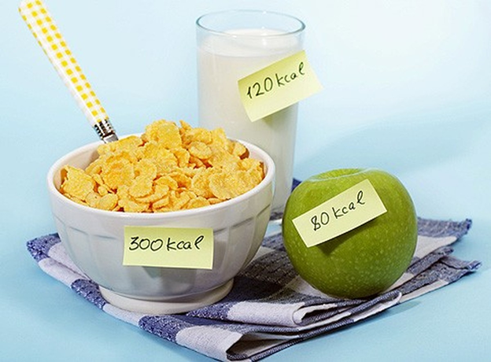
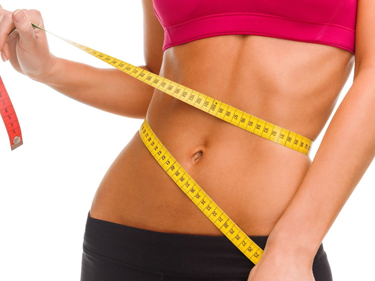

Из-за недостатка физической активности современный человек все больше страдает от проблем с фигурой. Одни постоянно пытаются похудеть, мучая себя различными диетами, другие, наоборот, хотят набрать мышечную массу. Но помочь во всем этом может абсолютно безобидный расчет БЖУ. Именно о нем мы поговорим в этой статье. Что это такое и зачем нужно? БЖУ - это общепринятое сокращение от сочетания "белки, жиры, углеводы". В совокупности эти вещества называются нутриентами. Нутриенты - основные составляющие нашего организма. От них во многом зависит и внешний вид, и здоровье человека. Каждый из нутриентов обладает своими свойствами и ролью в нашей жизни. Рассмотрим их подробнее:
Жиры. Являются второстепенными, но не менее важными источниками энергии, повышают эластичность стенок сосудов, в результате чего ткани получают больше питательных веществ из крови. Их недостаток в организме приводит к заболеваниям печени и почек, задержке жидкости и проблемам с кожей. Именно жиры влияют на уровень холестерина в нашей крови, поэтому их избыток часто становится причиной атеросклероза. Содержатся жиры в растительной (подсолнечное, кукурузное и другие масла) и животной (мясо, рыба, сливочное масло) пище. Рекомендуемое соотношение растительных и животных жиров в рационе - 3:7.
Углеводы. Это первостепенный источник энергии. Диетологами принято делить углеводы на простые (быстрые) и сложные (медленные). К первой группе относятся моносахариды и дисахариды. Самый распространенный пример - обычный столовый сахар, но простые углеводы также содержатся в фруктах и сладостях. Быстрыми они называются из-за скорости расщепления и усвоения в организме. Их функции - регуляция уровня сахара в крови, питание мышц и мозга. А теперь о сложных углеводах: они содержатся в макаронах, крупах, овощах и белом хлебе, долго расщепляются, благодаря чему насыщают организм энергией и практически не влияют на уровень сахара. Избыточные углеводы способны переходить в разряд жиров, из-за чего опять же растет уровень холестерина и развивается атеросклероз. Исключение углеводов из рациона - одна из самых популярных диет: при их недостатке в качестве источника энергии организм станет использовать жировые запасы.
Чтобы нутриенты правильно выполняли все вышеперечисленные функции, они должны поступать в нужных количествах и пропорциях. Это и является целью расчета БЖУ - узнать, сколько нутриентов каждого типа нужно употреблять для достижения той или иной цели.
Под интервальным голоданием понимают особую программу питания, при которой приемы пищи строго расписаны по времени. Для достижения максимального результата сочетайте методику с физическими упражнениями.
Разработано несколько видов интервального голодания, из которых можно выбрать подходящий. Не приступайте к соблюдению программы резко. Необходимо постепенно приучить организм к снижению объемов пищи. При желании соблюдать систему длительный срок, лучше консультироваться с врачами.
14/10 и 16/8 — самые популярные разновидности программы. Первая цифра обозначает время, в которое необходимо полностью отказаться от еды. Вторая цифра — количество часов, которое необходимо кушать. Некоторые программы содержат дневные интервалы, которые подразумевают целые сутки без еды. Человек раз в неделю должен сутки находиться без еды, с учетом обильного питья.
Голодание — форма пищевого поведения, существующая на протяжении всего времени. Организм человека имеет особые механизмы, которые позволяют периодически голодать: накопление гликогена, жира, синтез глюкозы из аминокислот, воздействие гормональных веществ, истощение запасов жира. Приспособительные механизмы развились в ходе эволюции человека. Предки не всегда могли позволить себе регулярное питание. Случались периоды, когда еду добыть было невозможно.
Правильное питание подразумевает баланс содержания питательных веществ: 55% углеводов, как источников энергии, 30% жиров и 15% белков. Однако кетодиета подразумевает иные принципы:
большее количество жиров – 80% рациона, 5% углеводов, 15% белков.
Основной рацион приверженцев кетодиеты состоит из мяса и других натуральных источников полезных жиров и не крахмалистых овощей, например, листовых.
В ограничении количества углеводов и заключается особенность диеты. Ведь углеводы наиболее предпочтительный источник энергии. Но организм - система продуманная, и если углеводов недостаточно, то энергия берется из других источников, а именно, расщепления жиров. И организм переходит в состояние кетоза.
Кетоз – приспособительная реакция в ответ на отсутствие углеводов в пище. Организм для получения энергии расщепляет жиры с образованием кетоновых тел. И это действительно способствует похудению, но нужно понимать механизм.
Дело в том, что углеводы удерживают большее количество воды в сравнении с белками и жирами. И когда в рационе недостаточно углеводов, организм начинает избавляться от лишней жидкости, чем и можно объяснить снижение веса.
Другие приемущества Кетодиеты: